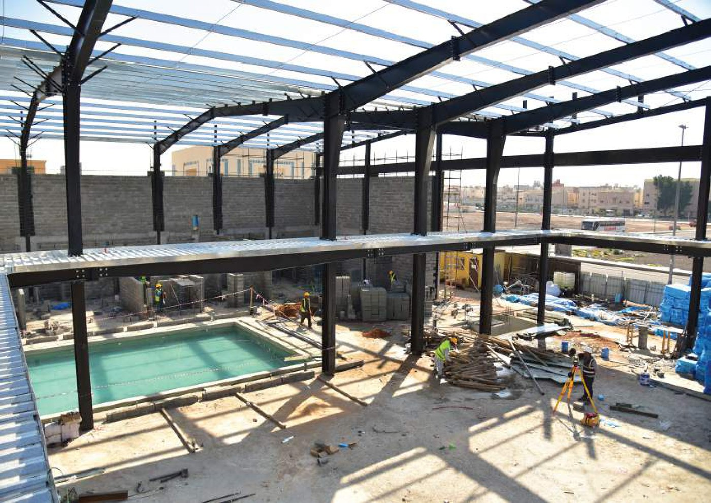

السلامة جزء من
طريقة التنفيذ.
يعمل التخطيط والتنسيق وجودة التصنيع والانضباط في الموقع معًا لدعم تسليم أكثر موثوقية للمشروع.
مبادئ التنفيذجودة عبر
جودة عبر
كل مرحلة.
تتكامل الجودة والسلامة في مسار العمل من التنسيق الهندسي إلى التصنيع والتركيب والتسليم.
01
التنسيق الهندسي
مواءمة الحل الحديدي مع متطلبات المشروع قبل بدء التنفيذ في الموقع.
02
ضبط الجودة
الحفاظ على الاهتمام بدقة التصنيع والتفاصيل والملاءمة وجودة التشطيب.
03
تنفيذ منضبط
دعم التركيب المنظم ونشاط الموقع من خلال التخطيط والإشراف.
04
السلامة الإنشائية
الحفاظ على توافق الهدف الهندسي والتنفيذ طوال مراحل التسليم.
منهج التسليمخطوات واضحة.
خطوات واضحة.
تنفيذ موثوق.
01
مراجعة
مراجعة المتطلبات والتفاصيل الفنية قبل بدء العمل.
02
تخطيط
تحديد التنسيق ومنطق التنفيذ ومسار العمل في الموقع.
03
تحكم
الحفاظ على الاهتمام بجودة التصنيع وتفاصيل المشروع.
04
تسليم
استكمال الحل الحديدي وفق نطاق المشروع المتفق عليه.
متطلبات المشروعتحتاج تنسيقًا